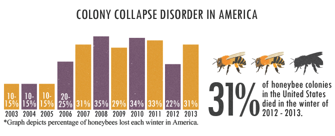

The Peddie School is a private boarding school in Hightstown, New Jersey. Peddie was ranked by Business Insider as 13th on its 2015 list of the Most Elite Boarding Schools In The US. Peddie encourages students to step outside their comfort zones and is committed to the intellectual, social and moral growth of each student. Peddie prepares its students for the rigors and rewards of college. Peddie students learn to inspire others by striving for the highest quality of citizenship.
Summer 2014
Beijing Normal University No.2
Start your adventure in Beijing! At SYA Summer China, you'll turbo charge your language skills and broaden your understanding of China's cultural heritage as well as the contemporary events which have shaped modern China.
Spring 2016
East China Normal University
In collaboration with the Peddie School's Asian Studies Program I pioneered a program that encouraged cultural exchange between Peddie and its sister-school in Shanghai. This included a semester-long study-away where I gained proficiency in Mandarin Chinese and studied Chinese culture, history, and philosophy.
2016-Present
NYU Stern School of Business
Stern’s Business and Political Economy degree will provide you with a unique global perspective that focuses on the connections between business, politics and economics and includes two full semesters of global study, with an option for a third semester away.
Be Part
Of My
Story!
Thanks For Stopping By
My sincerest thanks go out to the visitors of this site
If you would like to get in touch, my social media es aqui
(click those buttons)/
If you want to get off brand content unrelated this site you can follow me on social media!
These Are My Paintings
Date: January 2017
Category: Illustration
Ethics of Tech: Data Sovereignty
Ethics of Technology: Data Sovereignty
Imagine a world in which humans are subservient to whims of machines they created. In 1984, an American Science-fiction film, The Terminator, depicts an apocalyptic wasteland in which robots have formed a will of their own and dominated mankind to near extinction. While this may seem like an otherworldly fantasy, in the age of Machine Learning, Big Data, and Artificial Intelligence, one should consider how emerging technologies’ advancement may detract from human agency. This is odd because it seems like technology would provide us with more agency. With the advent of American television, we were enriched by a new and highly efficient medium of cultural proliferation, the power to understand what’s happening on the other side of the nation at our fingertips. The internet connected us with people around the world and gave us a new wealth of information that could be categorized, added to, and withdrawn from at a moment's notice. Cell phones have enabled us to have the power of a computer in our pockets, so that we can stay connected with the geographically distant, be warned of bad weather, and stay entertained through social media. On average, Americans now spend 4.3 hours watching television everyday. The average adult spends over 20 hours per week online. The average child between eight and twelve spends more than six hours on social media. Ironically, technology that seems to empower us can steal our attention and rob us of agency.
Tristan Harris, former design ethicist at Google, now runs a social movement, Time Well Spent, determined to bring attention to the abusive way technology has been designed and adopted by our culture. He urges us to consider how technology may be designed and used to improve the wellbeing of the user. To what extent could this excess time spent using technology be an unwitting acquiescence to companies that are ultimately competing for what is, in this age, our greatest asset: our attention? The most powerful companies in the world no longer mine coal and iron. They mine data. Today, the prevailing system is the attention-information complex: a vicious cycle in which the time we spend using technology, namely the internet, provides information used to increase time spent on the internet.
This prevailing complex is a symptom of unchecked technological growth. Because of the demonstrated consequences of this complex, we should consider how future technological growth should be navigated to serve our well-being. There’s an emerging industry to mirror the rise of potentially dangerous technology: Design Ethics. Design ethics is centered around developing consumer technology that is respectful of the consumers privacy and attention span. There stands a more specific issue within the realm technological overreach which will set a precedent for our future relationship with consumer privacy and the internet.
As internet users, we are consumers of a service provided by companies and are coerced into relinquishing our personal information: search histories, tax records, credit card purchases, etc. Who should have a right to this information? To what extent should companies like Google and Facebook respect the privacy of its users? In determining how to regulate the flow of our personal information, what ethical framework would be most effective?
There are two basic frameworks when considering online information availability: a Kantian Deontological framework and a Millian Consequentialist one. These frameworks seem diametrically opposed in the field of applied ethics; however, the ideal guidelines for policy may lie in some middle ground.
The consequentialist approach stems from the foundation that actions are morally ‘right’ if they promote overall human happiness--pleasure and the absence of pain. As a utilitarian, John Stuart Mill focuses on the consequences of actions and how much happiness they produce rather than strictly following general moral principles. In this vein, the basic principle of utility stands that we should act to create the greatest good for the greatest number.
A short fiction piece by Ursula Le Guinn demonstrates what can be problematic about this approach. She writes of a society called Omelas in which all inhabitants are happy, healthy, and rich--all except one. The way of life for these inhabitants depends on the perpetual suffering of a child who lies in a dungeon at the base of the city. When the inhabitants of Omelas reach adulthood, they must visit this child, show it no affection, and consent to his continued misery in order to remain in the city. In this case, the pain of a minority is overlooked for the benefit of a majority. If this approach to ethics were applied to other cases, one can imagine how problematic it could be. A common criticism of utilitarianism suggests it could precipitate the killing of one for the happiness of two, solong as the pleasure gained outweighs the increased pain.
This reasoning can also be seen in the organ donor example. Picture three hospital patients all waiting desperately, each for a different organ that could save their lives; A random woman, who is in excellent health is taken and has her vital organs harvested to save the three patients’ lives. This allegory is designed to raise the issue of personal property--it urges the reader to acknowledge that there must be limits to what can be taken in the name of utility. Some utilitarians would argue that utilitarianism is more subtle than that. They would contend that a society that isn’t sure whether one of its citizens could be murdered at any time just for the sake of another’s happiness would surely be a less happy society. They would assert that the first principle of utility is the protection of the rights of all and only after meeting this prerequisite can one maximize good. Because the inviolable rights that are prerequisite for maximizing good are unclear, this seemingly black and white philosophy veers into shades of grey.
Advocates of a consequentialist approach to data sovereignty could argue that the free flow of information creates the greatest good for the greatest number. Researchers at Harvard University recently developed a program that analyzes large swaths of data to find terrorists. Another big data initiative, Google Flu Trends(GFT), aims to use populations search history to predict epidemics and provide information for how to stop them. A 2014 report by PwC revealed that data from the internet may soon allow the Central Bank to detect irregularities in the market and avert crisis. The ability to stabilize markets, optimize consumer experience, and mitigate crime and disease makes the free-flow of information attractive for governments, businesses, and often society as a whole. While using people’s data has its benefits, ramifications of free data acquisition could cause a ripple effect that will not be visible for decades. In this case, the short-term result justifying the means would dwarfed by the tremendous consequences that could follow. For example, when mapping human genomes becomes mainstream enough, this information can be used to deny one’s health insurance. The attention span of an internet user can be easily deduced from their web searching patterns; this information could be used to deny them employment. In other words, it’s difficult to rely on a consequentialist framework when the delayed outcome is unclear.
Unlike the utilitarians, Kant did not believe one could deduce the ‘right’ thing to do by promoting the greatest good to the greatest number in a quantifiable way. He professed that moral truths could be synthesized by reasoning out a set of principles, which would then become one’s duty to follow. Kant surmised regardless of how great the benefits, certain actions are ethically forbidden. By his reasoning, the consequences of an action have no bearing on its inherent morality. Kant constructed his categorical imperative using the three following maxims:
“Act only according to that maxim whereby you can at the same time will that it should become a universal law without contradiction.”
“Act in such a way that you treat humanity, whether in your own person or in the person of any other, never merely as a means to an end but always at the same time as an end.”
“Therefore, every rational being must so act as if he were through his maxim always a legislating member in the universal kingdom of ends.”
Entities non-consensually acquiring personal information through the internet are in violation of Kant’s Categorical Imperative. This is particularly easy if we view our personal data as an extension of ourselves and thus, our property. At no point do users of the internet explicitly consent to this trade of personal property in exchange for using this service. If one were to will this maxim of non-consensual property acquisition to be universal law, there would be a contradiction. If everyone were allowed to steal, personal property could not exist. If personal property did not exist, stealing could not exist either, revealing a contradiction.
It is possible, however, that Kant’s principled approach should take into account the consequences of actions or inactions. There is a method of collecting and using information called data anonymization, which cleanses it of personally identifiable information. Many of the same benefits of big data usage such as identifying macroeconomic trends and preventing epidemics can be achieved while keeping individual users’ identities anonymous. Is it still stealing if this information is anonymized? Does the use of anonymized data cross the same ethical boundaries as that of personalized information? Applying a Kantian ethical framework becomes difficult because what is and isn’t aligned with his categorical imperative becomes blurred.
Date: January 2017
Client: Explore
Category: Graphic Design
Vlog
My Life:documented
I like to do wacky things with my friends
Date: January 2017
Client: Client
Category: Vlog Time
The Role Beekeeping Can Play in Coffee Production

While most coffee farmers do not rely on bees to pollinate their crops, organized beekeeping would improve the quality and quantity of their harvests while helping counter Colony Collapse Disorder, a grave epidemic wiping out hives and threatening global agriculture. Yet despite these potential benefits, most small-holder coffee farmers cannot afford the modest cost of basic beekeeping equipment. As such, major coffee purveyors such as Nespresso can protect and improve their supply by subsidizing the purchase of such equipment for small farms in impoverished coffee-producing nations such as Nicaragua.
Bees play a vital role in global food supply chains as the primary pollinators for 90% of all pollinated crops, accounting for a third of agricultural produce. But over the past decade, CCD has decimated wild and domesticated populations. In the United States, for example, wild bee populations declined by approximately 23% between 2008 and 2013. Additionally, a survey conducted by the Bee Informed Partnership found that the annual domesticated colony loss rates topped 33% between 2016 and 2017. While no direct cause of Colony Collapse Disorder has been isolated, the scientific consensus points to three leading culprits: pesticides, parasitic mites and global warming. With no quick and easy solution likely, increased beekeeping offers at least some counter-offensive against CCD.
The Arabica coffee plant can self-pollinate, but its flowers produce more fruit when exposed to bees, both wild and domesticated. When these bees transport pollen from the anther of one plant to the stigma of another, it mixes the plant DNA, giving these plants greater potential for reproduction. Yet as Colony Collapse Disorder spreads, the wild bees that small-holder farmers depend on could be at risk. Aside from safeguarding existing yield rates, beekeeping can help improve both the quality and genetic diversity of crops. Bees’ value in aiding coffee production is not a new discovery. As early as 2002, researchers at the Smithsonian Tropical Research Institute found that bees could steadily increase coffee yield rates by 36%. Similarly, a 2016 study on Colombia identified bees as the most significant aid to coffee yields, topping both fertilizer and pesticides.
Yet according to a study funded by the USDA, many small-holder coffee farmers do not invest in pollination because they do not recognize the potential economic payoff. In Nicaragua, for example, just 1% of such farmers have adopted beekeeping, with the rest relying entirely on wild bees for supplemental pollination. As such, the unrelenting grip of Colony Collapse Disorder threatens the stability of their crop yields--and supplies for their customers.
Therefore, to both protect and improve their supply chains, major coffee distributors should consider helping these farmers implement beekeeping to aid the pollination of Arabica coffee, boosting the quantity, quality and genetic diversity of their crops. When Nespresso CEO Jean-Marc Duvoisin spoke at NYU recently, he discussed the company’s AAA Sustainability Program. This program has helped small-holder farmers, cooperatives and other partners cultivate higher quality coffee sustainably. An added focus on beekeeping would dovetail effectively with this AAA initiative.